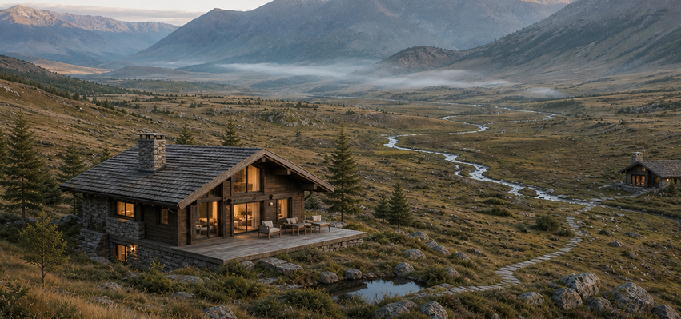
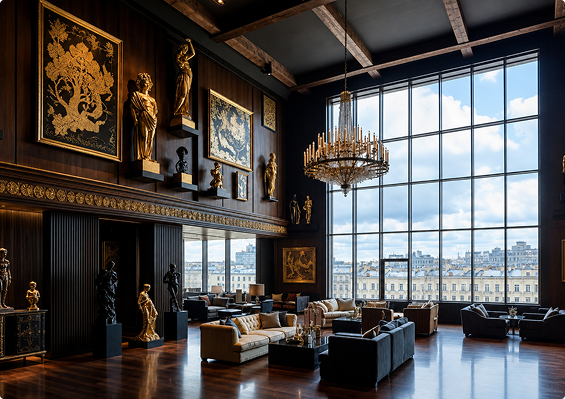

<div id="catalog-departments" class="catalog-page-section" data-v-f0be9abb=""><section class="departments-section" data-v-f0be9abb="" data-v-959976f2=""><div class="departments-section__inner base-container" data-v-959976f2=""><div class="departments-section__header" data-v-959976f2=""><div class="departments-section__heading" data-v-959976f2=""><!----><p class="catalog-section-eyebrow">Направления</p><h2 class="departments-section__title" data-v-959976f2="">Недвижимость для жизни и инвестиций</h2></div></div><ul class="departments-section__grid" data-v-959976f2=""><!--[--><li class="departments-section__item" style="--departments-item-span:3;" data-v-959976f2=""><a class="department-card" data-v-959976f2="" href="altai/" data-v-46ed93c9=""><!--[--><div class="department-card__overlay" aria-hidden="true" data-v-46ed93c9=""></div><div class="department-card__content" data-v-46ed93c9=""><h3 class="department-card__title" data-v-46ed93c9="">Алтай</h3><span class="department-card__link" data-v-46ed93c9="">Смотреть подробнее <span class="department-card__link-icon" aria-hidden="true" data-v-46ed93c9=""><svg viewBox="0 0 16 16" focusable="false" data-v-46ed93c9=""><path d="M3 13 13 3M5 3h8v8" fill="none" stroke="currentColor" stroke-linecap="round" stroke-linejoin="round" stroke-width="1.25" data-v-46ed93c9=""></path></svg></span></span></div><!--]--></a></li><li class="departments-section__item" style="--departments-item-span:3;" data-v-959976f2=""><a class="department-card" data-v-959976f2="" href="arhyz/" data-v-46ed93c9=""><!--[--><div class="department-card__overlay" aria-hidden="true" data-v-46ed93c9=""></div><div class="department-card__content" data-v-46ed93c9=""><h3 class="department-card__title" data-v-46ed93c9="">Архыз</h3><span class="department-card__link" data-v-46ed93c9="">Смотреть подробнее <span class="department-card__link-icon" aria-hidden="true" data-v-46ed93c9=""><svg viewBox="0 0 16 16" focusable="false" data-v-46ed93c9=""><path d="M3 13 13 3M5 3h8v8" fill="none" stroke="currentColor" stroke-linecap="round" stroke-linejoin="round" stroke-width="1.25" data-v-46ed93c9=""></path></svg></span></span></div><!--]--></a></li><li class="departments-section__item" style="--departments-item-span:2;" data-v-959976f2=""><a class="department-card" data-v-959976f2="" href="sochi/" data-v-46ed93c9=""><!--[--><div class="department-card__overlay" aria-hidden="true" data-v-46ed93c9=""></div><div class="department-card__content" data-v-46ed93c9=""><h3 class="department-card__title" data-v-46ed93c9="">Сочи</h3><span class="department-card__link" data-v-46ed93c9="">Смотреть подробнее <span class="department-card__link-icon" aria-hidden="true" data-v-46ed93c9=""><svg viewBox="0 0 16 16" focusable="false" data-v-46ed93c9=""><path d="M3 13 13 3M5 3h8v8" fill="none" stroke="currentColor" stroke-linecap="round" stroke-linejoin="round" stroke-width="1.25" data-v-46ed93c9=""></path></svg></span></span></div><!--]--></a></li><li class="departments-section__item" style="--departments-item-span:2;" data-v-959976f2=""><a class="department-card" data-v-959976f2="" href="sheregesh/" data-v-46ed93c9=""><!--[--><div class="department-card__overlay" aria-hidden="true" data-v-46ed93c9=""></div><div class="department-card__content" data-v-46ed93c9=""><h3 class="department-card__title" data-v-46ed93c9="">Шерегеш</h3><span class="department-card__link" data-v-46ed93c9="">Смотреть подробнее <span class="department-card__link-icon" aria-hidden="true" data-v-46ed93c9=""><svg viewBox="0 0 16 16" focusable="false" data-v-46ed93c9=""><path d="M3 13 13 3M5 3h8v8" fill="none" stroke="currentColor" stroke-linecap="round" stroke-linejoin="round" stroke-width="1.25" data-v-46ed93c9=""></path></svg></span></span></div><!--]--></a></li><li class="departments-section__item" style="--departments-item-span:2;" data-v-959976f2=""><a class="department-card" data-v-959976f2="" href="https://barnes-spb.ru/gorodskaya-nedvizhimost/vtorichnaya-nedvizhimost/" data-v-46ed93c9=""><!--[--><div class="department-card__overlay" aria-hidden="true" data-v-46ed93c9=""></div><div class="department-card__content" data-v-46ed93c9=""><h3 class="department-card__title" data-v-46ed93c9="">Санкт-Петербург</h3><span class="department-card__link" data-v-46ed93c9="">Смотреть подробнее <span class="department-card__link-icon" aria-hidden="true" data-v-46ed93c9=""><svg viewBox="0 0 16 16" focusable="false" data-v-46ed93c9=""><path d="M3 13 13 3M5 3h8v8" fill="none" stroke="currentColor" stroke-linecap="round" stroke-linejoin="round" stroke-width="1.25" data-v-46ed93c9=""></path></svg></span></span></div><!--]--></a></li><!--]--></ul></div></section></div>
